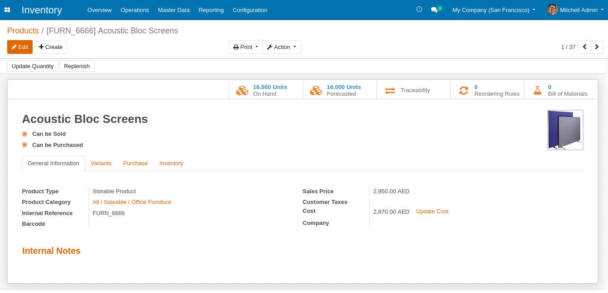
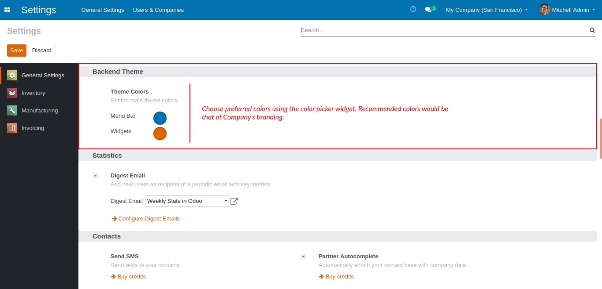

This is a simple but an attractive feature to set the color theme according to the Company's branding color(s)

Settings
Under General Settings, choose preferred colors from the color palette or enter the color code to modify the backend theme.
Lets you set different colors for the menu bar and other widgets.

Exclusive solution offered by
Oiling the wheels of business, have you overhauled your business yet?
For online demo and queries, please write to odoo@sandv.biz